레이더 개발 이야기 (44) - 기술 강국 독일의 허상
게시: 2023-08-24T06:30:14+09:00
<독일의 기술을 영국이 펼치다> 독일애들도 바보가 아니었으므로, 처웰 경이 염려했던 것을 즉각 생각해냄. 즉, 로열 에어포스 폭격기들에 장착된 H2S 레이더가 쏘아대는 전자파를 추적하면 루프트바페의 야간 전투기가 쉽게 폭격기들을 사냥할 수 있겠다는 것. 그래서 Telefunken사에게 H2S 전파 수신기를 주문함. 그런데 해보니 이게 쉽지 않음. 독일은 전파의 존재를 세계 최초로 실험으로 입증한 헤르츠 박사의 나라일 뿐만 아니라 당시 물리학 분야에서 세계 최고를 자랑하던 나라였지만, 전자 소재 산업을 등한히 했던 것이 이제 와서 뼈저린 후회거리가 됨. 당시 H2S는 GHz 단위의 microwave를 사용하고 있었으나, 독일은 고작 수백 MHz의 UHF, VHF를 사용하고 있었음. 근데 GHz 단위의 H2S 전파를 수신하고 추적하려면 당연히 그런 고주파수를 받아서 처리할 전자 소재가 있어야 함. 원래 전파 신호를 받아서 인식하려면 그걸 안테나에서 받고, 그걸 자체 oscillator(발진기)에서 나오는 신호와 혼합(mix)하여 더 낮은 주파수로 낮춘 뒤에 증폭(amplify)해야 했음. 근데 그렇게 믹싱 작업을 해줄 mixer로는 보통 진공관을 썼는데, 진공관에서는 capacitance(정전(靜電) 용량)이 너무 커서 그런 고주파에 대한 믹싱 작업을 해낼 수가 없었음.
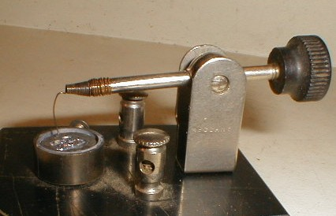
(보통 crystal detector라고 할 때는 이 cat whisker detector를 말함. 이건 주로 방연석(galena) 같은 반도체성 광물 결정체에 가느다란 금속선(고양이 수염)을 닿게 만든 물건. 발명 당시엔 이론적으로 잘 몰랐으나 아무튼 이것은 좀 불안정한 point-contact metal–semiconductor junction을 구성하여 조악한 형태의 Schottky diode가 되는 셈이라서, 금속선에서 광물 결정체로는 전류가 흐르지만 역방향으로는 흐르지 않아 정류기 및 전파 감지기로 사용됨. 초기 라디오에 많이 사용되다가 진공관 발명 이후 점차 밀려났으나, 1930년대 미국 Bell 연구소의 George Southworth가 우연히 중고 시장에서 cat whisker detector를 사서 가지고 놀다가 이 장치로는 GHz 단위의 microwave를 제대로 처리할 수 있다는 사실을 발견. 미국에서는 이 사실이 알려지자 당시 레이더를 연구하던 MIT에서 즉각 심층 연구에 돌입. 독일로서는 진짜 안타까웠던 것이 Hans Hollmann라는 독일 학자도 똑같은 발견을 했었고, 심지어 저 cat whisker detector 자체도 1906년 독일에서 특허 출원이 된 것이라는 점.) 근데 영국은 그걸 어떻게든 해냈으니 H2S를 만든 것 아님? H2S 레이더 수신기를 뜯어보니, 얘들은 진공관이 아니라 실리콘 결정체를 이용한 point-contact silicon crystal detector를 쓰고 있었음. (여기서 말하는 detector란 사실상 demodulator를 뜻하는 것이지만 여기서는 그냥 패스. 실은 저도 잘 모름...) 독일 과학자들은 여기서 독일이 전자소재 분야에서 이류국가라는 것을 절실히 깨달음. 독일이 진공관 가지고 씨름할 때, 영국 애들은 쇼트키 다이오드(Schottky barrier diode)를 만들어 쓰고 있었던 것. 더 마음이 아팠던 것은 쇼트키 다이오드의 핵심인 Schottky barrier 효과는 독일 학자인 Walter H. Schottky가 1930년대에 발표한 이론이었다는 것.
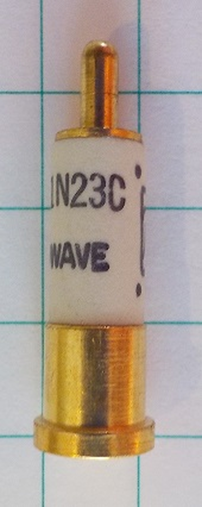
(이걸 최초의 반도체 소자라고 하기엔 부적절하지만, 아무튼 일부러 불순물을 넣은 실리콘의 특성을 이용해 WW2 기간 중 대량 생산된 실리콘 다이오드인 1N23. 저 눈금 하나의 길이는 1/4인치, 즉 6.35mm. 진공관 납땜이나 하고 있던 독일과는 비교가 되지 않음.)
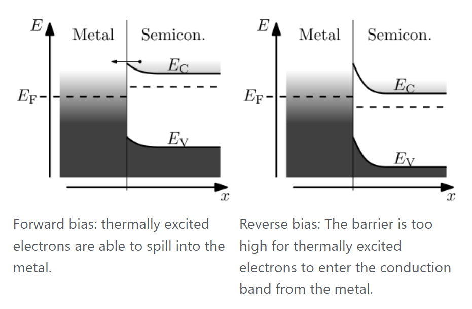
(쇼트키 배리어 효과. Forward bias에서는 반도체에서 금속으로 전류가 자유롭게 흐르지만 reverse bias에서는 못 흐름.)
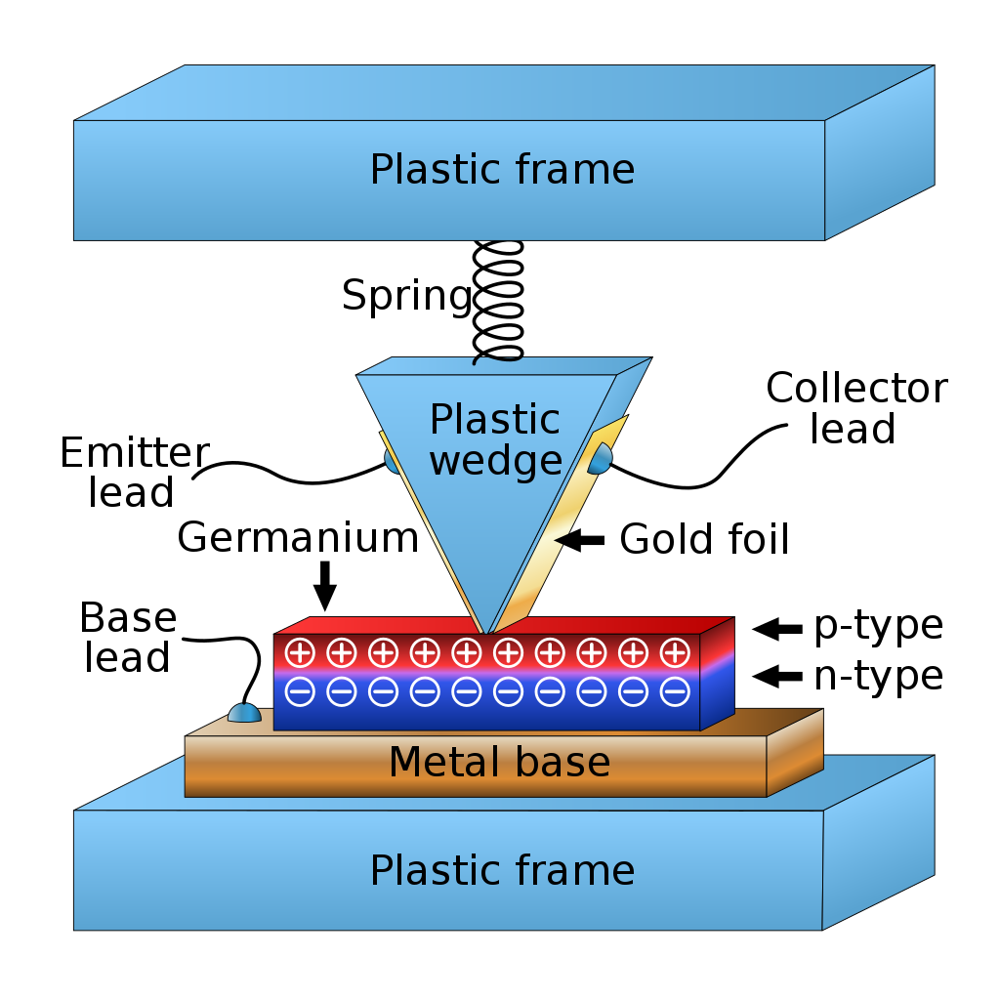
(오해하시면 안 되는 것이 이건 당시 H2S에 사용된 부품이 아닌, 1947년 미국 Bell 연구소에서 개발된 세계 최초의 point-contact transistor의 구조도. 당시 H2S에 사용된 것도 비슷한 개념을 이용하긴 했지만 그건 어디까지나 point-contact silicon crystal detector이고, 본격적인 transistor는 아니었음. 물론 이 개념과 지식, 경험이 축적되어 결국 이런 point-contact transistor도 만들어진 것임.) 독일은 무려 1000명의 과학자들을 모아다 H2S에 대항할 전자장비를 만들라고 닥달. 그러나 그게 그냥 뚝딱 만들어지는 것이 아니라 전파 물리학 뿐만 아니라 화학, 전기공학, 금속공학 등 다양한 분야가 산업적으로 발달해야 가능했던 것. 가령 이 모든 노력은 먼저 실리콘을 고순도로 정제하는 것부터 시작해야 했음. 적지 않은 시간과 노력을 들여 고순도 실리콘을 얻은 뒤에 그걸 몰리브덴 판 위에 증착시키려던 노력은 애써 증착시킨 실리콘 결정이 되풀이하여 파스스 부서지면서 결국 시간만 낭비하고 실패했고, 나중에 흑연판 위에 증착시키는 것이 성공함.
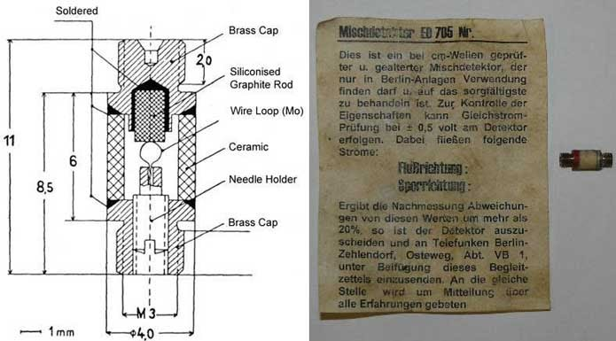
(독일이 온갖 노력을 다해 결국 만들어낸 쇼트키 다이오드인 ED705의 구조 및 실물 사진.)
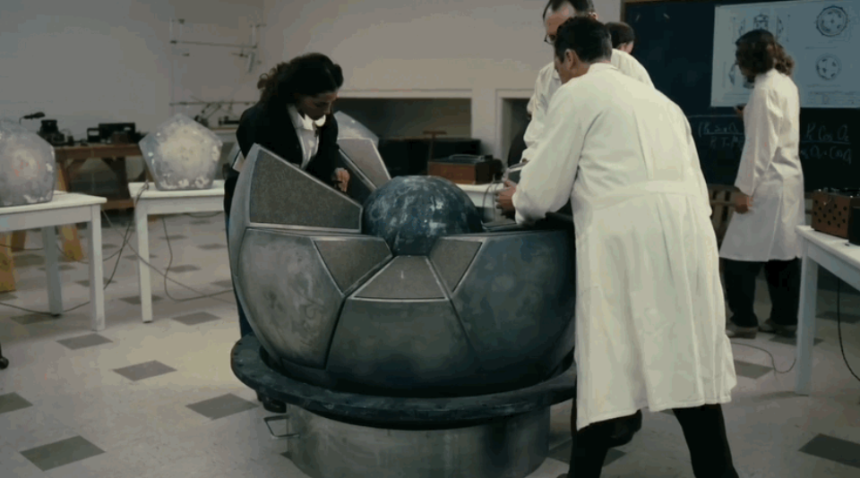
(오펜하이머도 원자탄 만드는 맨해튼 프로젝트를 하면서 크게 4가지 부서를 만드는 것부터 시작하는 장면이 영화 '오펜하이머'에 나옴. 오펜하이머가 제시한 4개 부서는 '이론 물리학' '실험 물리학' '금속공학(metallurgy)' '병기학(ordnance)'. 레이더든 원자탄이든 모든 분야의 학문이 고루 발전해야 실질적인 성과가 맺어지는 것. 원자폭탄 조립 장면에서 왜 저렇게 가운데에 든 원형 금속구를 스폰지 같은 것으로 감싸고 있는지 이해하신다면 자각을 하든 못하든 당신은 이미 밀덕...) 독일도 기술의 나라임. 결국 이렇게 만들어진 소재들을 이용하여 H2S 수신기도 만들고 더 나아가 cavity magnetron과 결합하여 GHz 주파수를 쓰는 독일제 공대공 레이더 FuG 240 Berlin까지 만들어냄. 그러나 문제는 시간. H2S의 전파를 추적할 수 있는 수신기인 Naxos는 1944년 후반대에나 만들어졌고, 그나마 그걸 만들어냈을 시점에 영국과 미국은 10 GHz의 전파를 이용하는 더 진보된 레이더인 ASV Mk. VI와 H2X를 사용하기 시작. 결국 H2S를 역추적하는 레이더 수신기는 실전에 아무런 도움이 되지 못함.
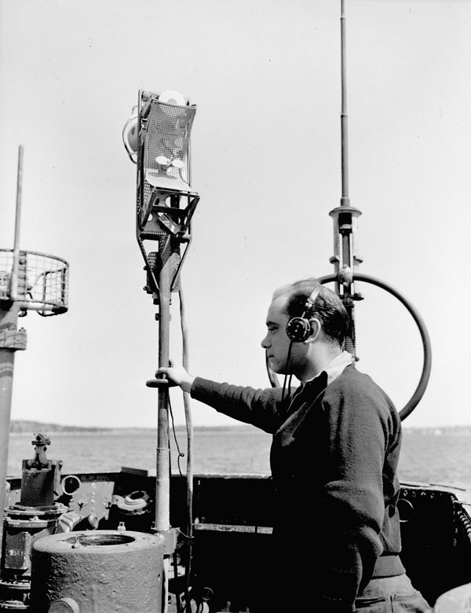
(독일 U-boat에 장착된 Naxos 수신기. H2S 레이더가 공대지 버전이라면 거의 동일한 구조로 만들어진 ASV MK. III는 공대함 버전. 이런 레이더들의 신호를 역추적하는 Naxos 수신기는 독일 야간 전투기보다 오히려 독일 해군 U-boat에게 더욱 절실했던 물건. 영국 해양 초계기들의 ASV MK. III 레이더의 신호를 포착하면 즉각 잠항해야 살 수 있었기 때문. 전에 MHz 단위의 레이더 전파 검출에 쓰던 Metox 수신기로는 꽤 좋은 실적을 거두었으나, 이 GHz 전파를 수신하는 Naxos 수신기는 너무 늦게 나오는 바람에 실제로는 거의 도움이 되지 않음.) 게다가 3.3GHz를 사용하는 독일제 공대공 레이더 베를린은 1945년 4월에나 만들어졌고, 그나마 25개 세트만 만들어짐. 역시 전쟁의 향방에는 아무런 역할을 하지 못함.
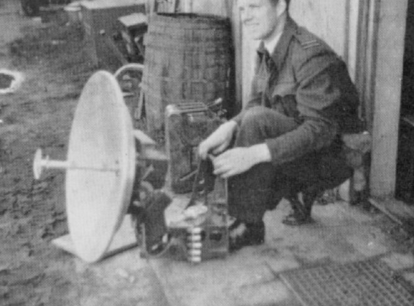
(독일이 애써 만든 뒤 제대로 써보지도 못하고 연합군 손에 들어간 FuG 240 Berlin 레이더) <모르는 것이 약> 정작 로열 에어포스는 독일의 이런 노력에 대해 처음에는 아무 것도 몰랐음. 그러나 1944년 봄, 첩보망을 통해 독일이 H2S 전파를 역추적하는 수신기 Naxos를 개발했다는 정보가 곳곳에서 들어오기 시작. 이 소식이 들어오자 로열 에어포스는 격렬한 내부 논쟁에 휩싸임. "내 이럴 줄 알았다, 당장 H2S 사용을 중단해야 한다"라는 파와 "독일이 이렇게 빨리 대응책을 내놓을 리가 없다, 더 신중해야 한다"라는 파로 갈려 열심히 입씨름을 시작한 것. 더군다나 이건 폭격기 승무원들의 목숨이 달린 문제다보니 '니가 그 사람 목숨 책임 질거야?'라는 태도까지 곁들여져 이 논쟁은 결론도 없이 수개월간 뜨겁게 이어짐. 그러나 숫자는 거짓말을 하지 않는 법. 로열 에어포스와 레이더 개발팀 사이에서 연락장교 역할을 하던 Dudley Saward가 차분하게 통계치를 뽑아보니, Naxos가 사용되기 이전의 로열 에어포스 폭격기 격추율과 사용된 이후의 격추율은 오히려 출격당 4%에서 2%로 더 떨어졌다는 것이 드러남. 새워드는 "이 낙소스 수신기 소동은 독일놈들이 실력이 안 되니까 정보 역공작을 통해 우리가 H2S 레이더를 못 쓰게 만드려고 한 개수작에 불과하다"라고 결론을 내림. H2S 사용 중단을 요구하던 폭격기 조종사들은 입을 다물 수 밖에. 애초에 독일의 낙소스 수신기에 대한 첩보는 그냥 안 가져왔다면 더 좋았을 첩보. 거기에다, 이 Naxos 논쟁의 관뚜껑에 못을 박는 사건이 벌어짐. 원래 loop에 직각인 방향으로는 전파 감도가 0이라는 원리에 근거한 loop antenna 전파 방향 탐지는 근본적인 문제가 있었음. 즉, 전파가 지금 방위각 110도에서 오는 것인지, 아니면 정반대 방향인 110+180 = 290도에서 오는 것인지는 알 수 없다는 것. 그러나 상식적으로 내 항공기가 대충 프랑스 상공인지 영국 상공인지는 다른 일반 항법을 통해 알 수 있었기 때문에 바보가 아닌 이상 전파가 110도에서 오는 것인지 290도에서 오는 것인지는 알 수 있었음.
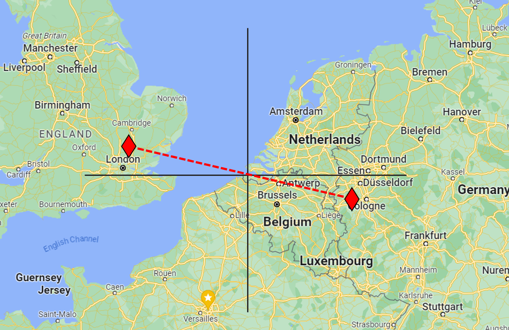
(Loop 안테나에 의한 방향 탐지에서 근본적인 문제는 180도 반대 방향에서 측정하는 것과 강도가 똑같다는 것. 즉, 저 지도 상에서 네델란드 해안에 설치된 전파 beacon에서 보내주는 전파에만 의존하여 위치를 파악한다면 자기가 쾰른 부근인지 런던 부근인지 알 수 없음. 그러나 '바보'가 아닌 다음에야 설마 그걸 모를까 했으나... 그런 바보가 있었음!) 그런데 바보는 언제 어디에나 한 명쯤은 나오는 법. 1944년 7월, 루프트바페의 Ju 88G-1 야간 전투기 한 대가 한밤중에 너무나 태연하게 영국내 Woodbridge 공군기지에 착륙. 이 항공기의 조종사가 110도 방향과 290도 방향을 착각한 것. 이들은 착륙을 완료하고나서야 여기가 독일이 아니라 영국임을 알고 당황. 영국군도 당황했으나 이들은 바보 독일 공군 애들이 내부의 주요 문서나 전자기기들을 파괴하기 전에 재빨리 체포.
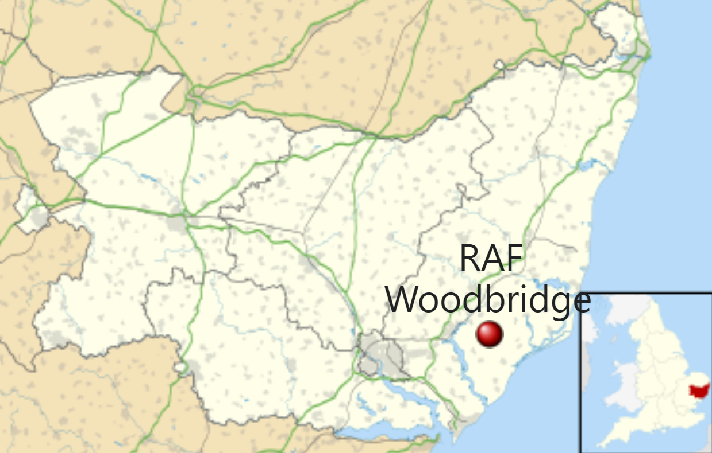
(지금도 있는 Woodbridge 공군기지. 런던 북서쪽에 위치.)
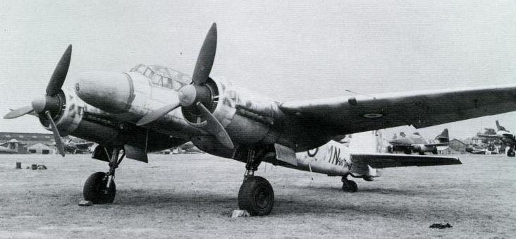
(원래 폭격기인 Ju-88을 개조하여 야간 전투기로 바꾼 Ju-88G-6. 이 기종은 여기서 언급된 Ju 88G-1이 아니라 훨씬 후기형으로서, 위에서 언급한 독일제 공대공 레이더 FuG 240 Berlin을 기수의 코 부분에 장착한 것. 그래서 보기 흉한 사슴뿔 안테나를 달고 있지 않음.) 이때 거기에 실린 전자기기들을 검사하고 승무원들을 취조해본 결과, 아직 독일 공군의 야간 전투기에는 H2S 레이더 전파를 역추적할 장치를 갖추고 있지 않다는 것이 확인됨. 이후 로열 에어포스는 안심하고 H2S 레이더를 마음껏 사용. 다만, 이때 독일 야간 전투기에는 Monica 레이더에 대한 역추적 수신기인 Flensburg radar detector를 갖추고 있다는 것이 드러남. 이 모니카 레이더란 무엇이었을까? 놀랍게도 이 모니카 레이더는 히로시마와 나가사키의 핵폭격에도 사용됨. 그 이야기는 다음에.